★★★★★
« Dépannage suite à la tempête, très réactif, même un dimanche. Super gentil et agréable. Je recommande++ »
D
Couverture neuve et rénovation, tuile, ardoise, zinc, charpente et réparation : Cycy.Couverture Zinguerie pose et entretient tous types de toiture à Saint-Gobain et alentours, avec un travail soigné de la gouttière au faîtage.
De la pose complète à la petite réparation, en passant par l'entretien : chaque toiture reçoit le même soin, quel que soit le matériau.
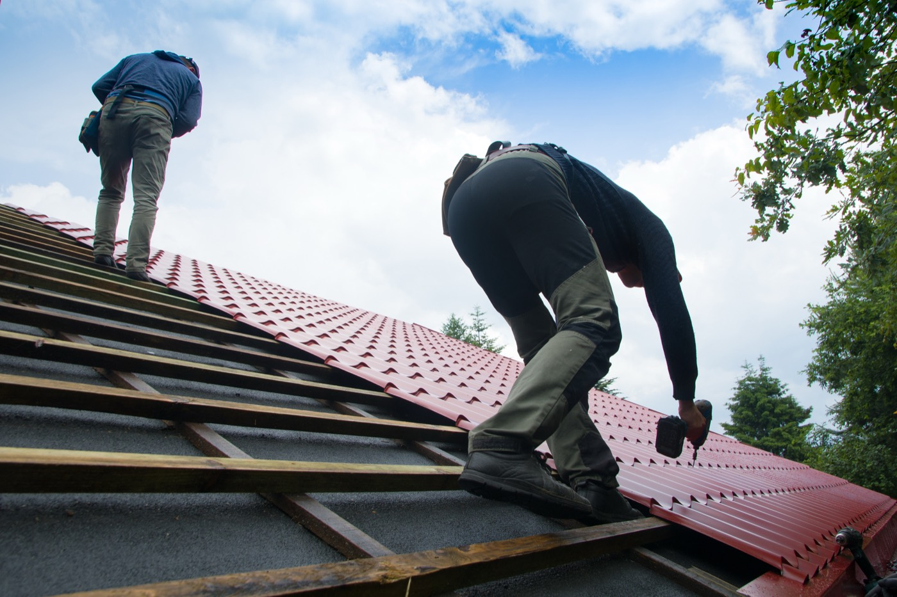
Pose complète en neuf ou réfection totale d'une toiture vieillissante.

Tuiles terre cuite ou béton, mécaniques ou plates, dans les règles de l'art.
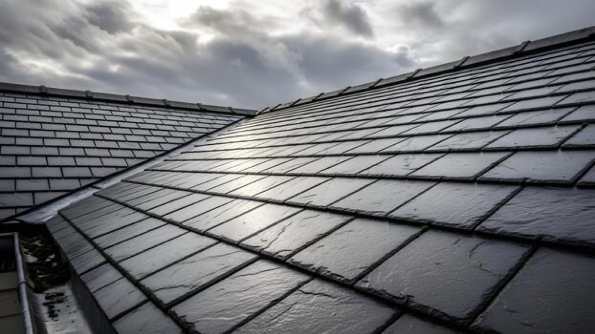
Ardoise naturelle ou fibre-ciment, posée au crochet ou au clou.
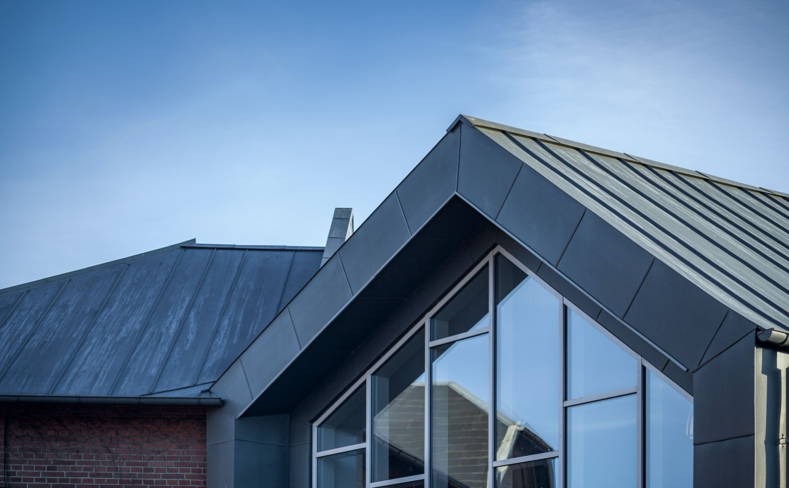
Toiture et zinguerie : zinc, aluminium, gouttières, chéneaux et descentes.

Charpente traditionnelle ou industrielle, en neuf comme en rénovation.
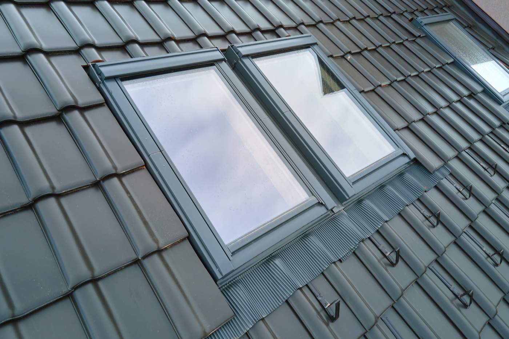
Installation et remplacement de fenêtres de toit, avec étanchéité parfaite.
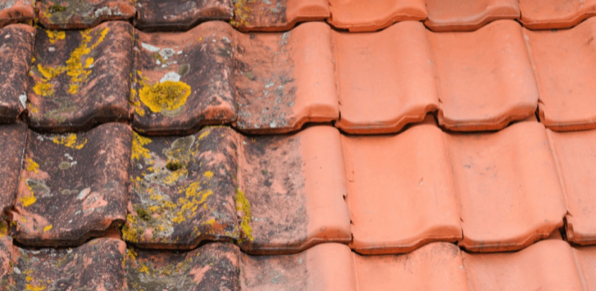
Nettoyage, démoussage et traitement hydrofuge pour prolonger la vie du toit.

Fuite, tuile cassée, faîtage descellé, sinistre : on répare tout type de toit.
Un aperçu de toitures posées, rénovées et entretenues dans le secteur de Saint-Gobain.
Vous parlez directement à celui qui monte sur le toit. Diagnostic honnête, matériaux de qualité, chantier propre et travaux couverts par l'assurance décennale.
Vos travaux de couverture et de charpente sont garantis dix ans.
Le métier de couvreur, appris et pratiqué, pas improvisé.
Un chiffrage détaillé, sans surprise, expliqué poste par poste.
Protection des abords, finitions nettes et site laissé propre.
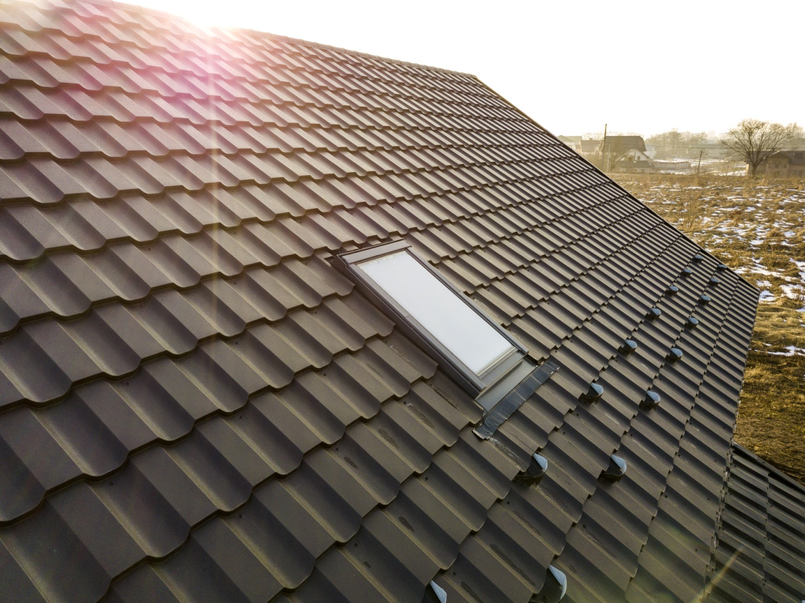
Un déroulé simple et transparent, du premier contact à la réception du chantier.
Vous nous appelez ou remplissez le formulaire. On échange sur votre besoin.
On monte voir la toiture, on évalue l'état et on remet un devis gratuit et détaillé.
Travaux réalisés dans les règles de l'art, avec des matériaux adaptés et un chantier propre.
On vérifie ensemble le résultat. Vos travaux sont couverts par l'assurance décennale.
Les retours de nos clients, publiés sur notre fiche Google.
« Dépannage suite à la tempête, très réactif, même un dimanche. Super gentil et agréable. Je recommande++ »
Note maximale (5/5) laissée sur Google.
Fournisseurs et marques avec lesquels nous travaillons au quotidien.
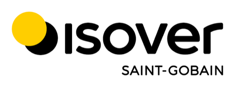
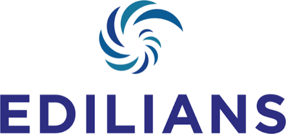
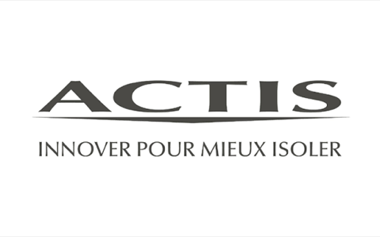
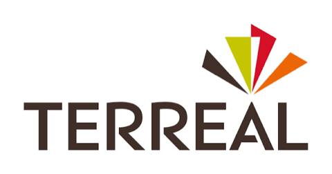
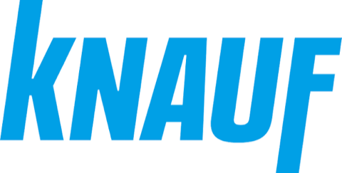
Installés à Saint-Gobain (02410), nous intervenons dans toute l'Aisne pour la pose, la rénovation, l'entretien et la réparation de toiture, chez les particuliers comme chez les professionnels. Habitués aux toitures en ardoise et en tuile de la région, nous adaptons chaque chantier au bâti local et au climat des Hauts-de-France.
Couvreur et zingueur de proximité, nous nous déplaçons rapidement dans tout le secteur.
Une autre question ? Appelez-nous, on vous répond.
07 69 87 80 07Gratuit et sans engagement.
Neuf, rénovation, réparation ou entretien : demandez votre devis gratuit. Travail soigné et travaux garantis.